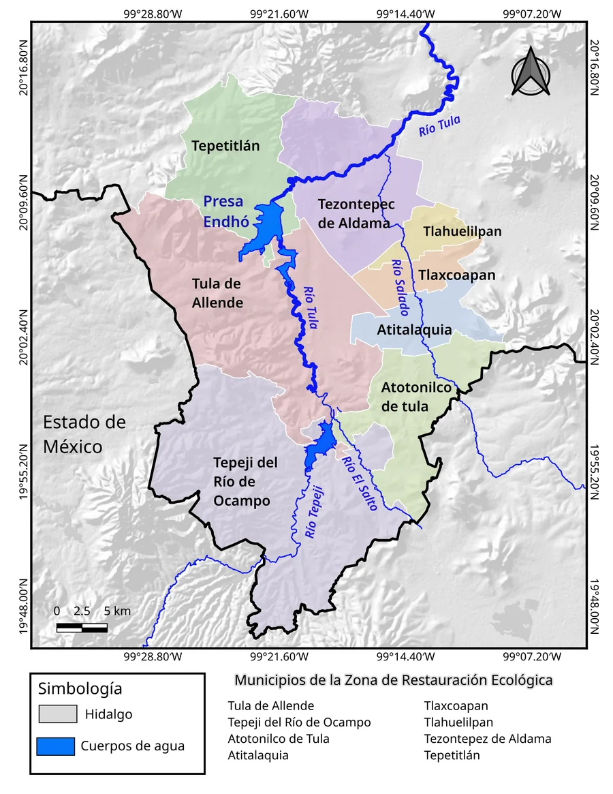

¿Cómo reconocerlo?
Se ve como bolitas o mechones gris verdosos pegados a ramas, cables o copas de árboles. Vive sobre el árbol: no nace del suelo.
Revisa primero ramas delgadas y partes bajas.Guía de campo · Valle del Mezquital
Tillandsia recurvata (L.) L.
Valle del Mezquital, Hidalgo
Reconocimiento, evaluación y manejo en campo de la planta epífita que debilita los mezquites del valle.

Pasos básicos para reconocer el heno motita, actuar con seguridad y evitar errores comunes en campo.
Se ve como bolitas o mechones gris verdosos pegados a ramas, cables o copas de árboles. Vive sobre el árbol: no nace del suelo.
Revisa primero ramas delgadas y partes bajas.Actúa cuando cubre muchas ramas, cuando ocupa gran parte de una rama, o cuando ves ramas secas, débiles o con daño visible.
Mejor época: enero a abril.Primero retira el heno con cuidado. Usa herramienta adecuada y evita romper ramas sanas. Después puede aplicarse tratamiento complementario si la brigada lo indica.
Primero retirar; luego complementar.No lo dejes tirado. No arranques ramas sanas. No apliques químicos sin orientación. No trabajes en árboles altos o junto a cables sin apoyo.
Si hay riesgo, pide ayuda.Pide apoyo si el árbol está alto, seco, junto a cables, en vía pública, o si muchas ramas están cubiertas.
También si no tienes herramienta o capacitación.Embólsalo de inmediato. No lo dejes tirado ni lo transportes abierto. Sigue el protocolo local de disposición para evitar que vuelva a dispersarse.
El material retirado puede seguir viable varios meses.Importante: no dejes el heno retirado en el suelo. Embólsalo de inmediato y sigue el protocolo de disposición de la brigada.
Antes de salir, revisa que la brigada lleve lo mínimo para trabajar con seguridad.
Clasifica rápidamente qué tan afectado está el árbol y decide qué hacer.
Nivel bajo
Hay bolitas o mechones aislados en pocas ramas. El árbol conserva follaje y no se observan ramas secas importantes.
Registrar el árbol y programar revisión en la siguiente jornada. No requiere intervención urgente.
Nivel medio
El heno aparece en varias ramas, especialmente en las partes bajas y ramas delgadas. Se nota a simple vista sin necesidad de acercarse mucho.
Programar retiro manual en la próxima jornada. Priorizar las partes bajas de las ramas.
Nivel alto
El heno domina visualmente varias ramas o una parte importante de la copa. Puede haber ramas con poco follaje o signos de debilitamiento.
Priorizar este árbol en la campaña. Retirar con brigada capacitada y valorar tratamiento complementario.
Nivel crítico o riesgo físico
Hay ramas secas o quebradizas, el árbol está muy debilitado, o existe riesgo por altura, cables eléctricos o paso de personas y vehículos. Cualquiera de estas condiciones es suficiente para pedir apoyo.
No intervenir sin apoyo. Registrar y notificar al responsable de brigada o autoridad municipal.
Conocida también como paxtle, gallitos o ball moss. Una planta notable, pero destructiva en alta densidad.
Tillandsia recurvata es una bromeliácea epífita atmosférica. Mide 2–10 cm, forma cúmulos esféricos grisáceos y no tiene raíces funcionales en el suelo. Se fija a ramas rugosas con tricomas escamosos. Se distribuye desde el sur de EE.UU. hasta Argentina.
Usa metabolismo CAM nocturno: abre sus estomas de noche para captar CO₂ y conservar agua. Sus tricomas absorben humedad de la niebla y el rocío. La bacteria Pseudomonas stutzeri vive en su tejido y fija nitrógeno del aire. No necesita suelo ni lluvia directa.
Sus semillas plumosas viajan con el viento (anemócoras). Exhibe viviparismo: germinan antes de ser liberadas. Aunque menos del 0.6% llega a árboles nuevos (PLOS ONE 2017), sincroniza la apertura de cápsulas con el fin de la temporada seca. La lluvia actúa como barrera natural.
A baja densidad alberga +80 especies de artrópodos (Tecozautla, Hidalgo). Pero a alta densidad actúa como parásita estructural: daña los tejidos vasculares del árbol hospedero, reduciendo su capacidad de sobrevivir a la sequía.

Cada cápsula libera varias semillas equipadas con un penacho de pelos higroscópicos que las mantiene flotando con humedad baja — exactamente las condiciones de la temporada seca del Valle del Mezquital (enero–abril).
El viviparismo (la semilla germina antes de ser liberada) le da ventaja competitiva: al posarse sobre una rama ya trae la radícula activa. Aunque sólo el 0.6 % llega a un árbol nuevo, una sola planta adulta produce decenas de cápsulas por temporada.
Esto explica por qué un árbol tratado puede reinfestarse en menos de un año desde árboles vecinos no tratados — y por qué el control debe hacerse a escala de ejido o barrio, no árbol por árbol.
La compra y venta de heno motita como adorno navideño es el principal vector de dispersión artificial a nuevas zonas. CONAFOR ha emitido alerta formal. Su transporte sin bolsa sellada está desaconsejado. El aprovechamiento comercial requiere autorización bajo NOM-011-SEMARNAT-1996.
El Valle del Mezquital concentra el daño más documentado de Tillandsia recurvata en el Altiplano Central de México.

8 municipios · Zona de Restauración Ecológica · DOF 2024
Además: Ixmiquilpan, Cardonal, Tecozautla y 84 municipios más en Hidalgo
Cómo daña al árbol
Modifica xilema y floema
Reduce los vasos conductores de agua y azúcares. El árbol pierde eficiencia hidráulica.
Umbral crítico ≥50% cobertura
A partir de ese punto, la mortalidad de brotes es estadísticamente significativa. Flores-Palacios et al. 2014
Alelopatía
Libera compuestos que inhiben la germinación y crecimiento de plántulas de mezquite.
Amplificación por sequía
En estrés hídrico, T. recurvata extrae agua activamente del hospedero, convirtiéndose en parásita real. ScienceDirect 2021
Daño acumulado
Los individuos reproductivos causan mayor daño que los vegetativos. Atacar adultos primero tiene el mayor impacto.
«A partir del 50% de cobertura de la rama, la mortalidad de brotes es estadísticamente significativa.»
Flores-Palacios et al. (2014) — Journal of Arid Environments
Sin control, vuelve en menos de 1 año
La reinfestación desde árboles vecinos no tratados ocurre en menos de 12 meses. El manejo debe coordinarse a escala de ejido o barrio, no solo árbol por árbol.
Zona Industrial Tula-Tepeji — Precaución con el material removido
El heno motita acumula metales pesados (Pb, Cd) en sus tricomas hasta 40× más concentrado que en zonas agrícolas. El material removido en esta zona NO debe usarse como forraje o composta sin análisis de metales. (ACP 2009 — Atmospheric Chemistry and Physics)
Área de Influencia de la Presa Endhó
El Ejecutivo Federal declaró 36,637 hectáreas del Valle del Mezquital como Zona de Restauración Ecológica — el primer mandato legal federal que nombra explícitamente al heno motita como especie invasora de control obligatorio en la región.
"Implementar programas de monitoreo y control de especies invasoras (heno motita y lirio acuático), estos programas deben incluir la identificación y ubicación de las especies, estrategias para su erradicación mediante métodos mecánicos y/o biológicos, así como, educación para las comunidades locales sobre su impacto."
Responsable: SEMARNAT y dependencias · Ámbito: los 8 municipios de la ZRE
"Implementar acciones de protección forestal con el objetivo de prevenir, combatir y controlar plagas forestales, reducir el deterioro de los diversos ecosistemas y atender contingencias fitosanitarias."
Incluye contingencias fitosanitarias por plagas epífitas
"Realizar acciones de capacitación en los municipios de Atitalaquia, Atotonilco de Tula, Tepeji del Río de Ocampo, Tepetitlán, Tezontepec de Aldama, Tlahuelilpan, Tlaxcoapan y Tula de Allende, sobre el control de plagas epífitas o de mayor infestación y promover la conformación de una brigada para la atención de estas plagas mediante la ejecución de programas, que tengan por objeto la integración de brigadas de saneamiento forestal."
Base legal para la formación de brigadas comunitarias con financiamiento institucional
"Se prohíbe la liberación o introducción de especies exóticas y/o invasoras en los hábitats y ecosistemas naturales de la zona de restauración ecológica."
Refuerza la prohibición del comercio navideño de heno motita en toda la ZRE

Fuente: DOF — Diario Oficial de la Federación, 26 de septiembre de 2024. Firmado por el Ejecutivo Federal. Fundamento: LGEEPA artículos 78 y 78 BIS.
Ningún método aislado es suficiente a largo plazo. La combinación mecánica + química + silvícola, aplicada en temporada correcta, es el enfoque científicamente respaldado.
Recomendado para brigadas comunitarias. El método más económico según INIFAP y tan efectivo como la poda.
Para ramas con más del 50% de cobertura o con señales visibles de dieback (muerte de extremidades).
El tratamiento químico solo tiene efecto temporal. Siempre debe combinarse con remoción mecánica.
| Producto | Concentración (referencia) | Fuente | Notas |
|---|---|---|---|
| Bicarbonato de sodio | 66 g/L (1 kg en 15 litros) | INIFAP México | Método de referencia nacional; más efectivo que vinagre |
| Bicarbonato de sodio | 25–50 g/L | LSU AgCenter (EE.UU.) | Eliminación en 3–5 días a esta concentración |
| Vinagre (ácido acético) | 5% | UTTT 2024 | Menos efectivo que bicarbonato; no usar solo |
| Hidróxido de cobre (Kocide) | 19–27 g/L | Backbone Valley Nursery | Requiere aplicador certificado (fungicida registrado) |
Con bicarbonato al 10%, las plantas inician su recuperación a la semana de terminar un tratamiento de 9 semanas. El control químico aislado no es suficiente. Siempre combinar con remoción mecánica.
La sincronía con la fenología de T. recurvata es la diferencia entre un tratamiento efectivo y uno que se pierde.
Actúa aquí. Temporada seca: árboles en reposo o pre-brotación, semillas aún no dispersadas, tricomas del heno más activas (lo que hace más efectivo el bicarbonato), menor riesgo de dañar el árbol. CONAFOR, INIFAP e investigadores UTTT coinciden: esta es la ventana.
Si se perdió la ventana óptima, aún es viable actuar antes de la floración. Menos efectivo que enero–abril, pero mejor que no hacer nada. Vigilar signos de floración activa.
No aplicar productos químicos. La lluvia diluye el bicarbonato y los demás agentes, inutilizando el tratamiento. En esta temporada: solo monitoreo visual y mapeo de nuevas infestaciones para planificar.
Evalúa los resultados de la campaña anterior. Mapea árboles con nueva infestación. Prepara materiales (varillas, aspersoras, bolsas, bicarbonato). Coordina brigadas. Solicita apoyo CONAFOR PF.1/PF.2 para la siguiente temporada.
Situación actual de la investigación y hallazgos de la región.
No existe ningún hongo, insecto ni nematodo desarrollado y validado específicamente para controlar T. recurvata. Esta es una brecha de investigación reconocida en la literatura científica internacional.
Investigadores de la Universidad Tecnológica Tula-Tepeji descubrieron que extractos de heno motita inhiben hongos fitopatógenos en cultivos (oidio/cenicilla). La especie es simultáneamente plaga forestal y recurso fitoquímico potencial.
Esto significa que la biomasa removida en campañas mecánicas tiene valor como fuente de extractos bioactivos — un incentivo económico adicional para las brigadas.
UTTT (Tula-Tepeji), UAEH (Hidalgo) e INIFAP tienen programas de investigación en curso. Contactar estas instituciones para participar en proyectos de biocontrol.
El método con mayor efectividad documentada a largo plazo. Requiere más coordinación pero protege 5–7 años.
reducción de reinfestación con 30% aclareo + 100% poda de ramas infestadas
Flores-Flores et al. 2016, INIFAP/UAAAN, experimento 3 años
"«El control mecánico combinado con aclareo silvícola protege al arbolado durante 5 a 7 años — la opción con mayor durabilidad documentada en campo.»
Flores-Flores et al. (2016) — INIFAP/UAAAN
Antes de iniciar cualquier campaña de control, conoce los riesgos documentados y los protocolos para proteger a los brigadistas, a los árboles y al entorno.
Equipo de protección personal
Guantes de trabajo al manipular varilla corrugada y material removido
Gafas protectoras durante la aplicación de bicarbonato u otros productos
Cubrebocas al rociar y al manipular material en polvo
Manga larga en campo; evitar exposición prolongada al sol en temporada seca
Precauciones al rociar
No rociar en lluvia ni alta humedad — diluye el producto y anula la efectividad
Probar en área pequeña antes de escalar — mezquite y huizache no tienen datos de fitotoxicidad publicados
Ciruelo y cerezo ornamental: riesgo de quemadura foliar con bicarbonato ≥2.5%
⚠ Zona industrial Tula-Tepeji
El material removido en esta zona acumula metales pesados (Pb, Cd) hasta 40× más concentrado que en zonas agrícolas.
No usar como forraje animal sin análisis de metales pesados
No usar como composta o sustrato sin análisis previo
Quema controlada — tratar como residuo potencialmente contaminado
Reséndiz-Vega & Sánchez-Trujillo 2021 · ACP 2009
Disposición del material removido
Embolsar inmediatamente — el material separado mantiene viabilidad hasta 6 meses
Quemar — método de disposición aprobado por CONAFOR; cenizas útiles como fertilizante
No dejar en el suelo ni transportar abierto — puede re-establecerse o dispersarse
Herbicidas selectivos: uso forestal requiere autorización SEMARNAT/CONAFOR
La prevención no es erradicación total — es mantener la densidad por debajo del umbral de daño. Cinco acciones con base científica.
Actúa en la ventana enero–abril. Las plantas no han dispersado semillas, los árboles están en reposo y los tratamientos químicos son más efectivos. Perder esta ventana implica esperar un año completo.
El 20% de los árboles más infestados (>50% cobertura en múltiples ramas) produce la mayoría de las semillas. Trátarlos primero reduce la fuente de propágulos para toda la zona. Eliminar adultos reproductivos tiene mayor impacto que tratar plántulas. (Valverde & Bernal 2010)
Retira ramas muertas (microhábitat preferido), mantén el dosel denso, reduce el estrés hídrico donde sea posible. Árboles vigorosos son más resistentes a la colonización y al daño de la sequía que amplifica la parasitosis.
Ensaca inmediatamente todo material removido. No comprar ni vender heno motita como adorno (alerta CONAFOR). Limpia herramientas entre sitios de trabajo. Capacita a la comunidad sobre las vías de dispersión artificial.
Inspección visual cada 4–6 meses. Registra el porcentaje de cobertura por árbol (<25%, 25–50%, 50–75%, >75%). Cualquier árbol que supere el 50% en múltiples ramas entra en cola de intervención prioritaria para enero–abril.
Los errores más frecuentes que hacen que los esfuerzos de control fracasen, con la corrección basada en evidencia.
Solo aplicar bicarbonato u otro químico sin remoción mecánica
El tratamiento químico aislado tiene efecto temporal. La planta inicia recuperación ~1 semana después de terminar 9 semanas de aplicación. La remoción mecánica es el método principal; el químico es un complemento. (UTTT 2024)
Pensar que el tratamiento falló porque el musgo sigue en el árbol
El heno motita muerto puede tardar 18 meses a 10 años en desprenderse. Si el material está seco y oscurecido, el tratamiento funcionó. No lo toques ni vuelvas a aplicar innecesariamente.
Dejar el material removido en el suelo o en montones sin embolsar
Embolsar inmediatamente en bolsa plástica cerrada. El heno motita separado del árbol sigue siendo viable hasta 6 meses y puede re-establecerse en el mismo árbol u otros cercanos.
Tratar solo el árbol visible e ignorar los árboles vecinos
Los árboles vecinos no tratados re-infestan en menos de 1 año. Todo el esfuerzo se pierde sin coordinación a escala de ejido o cuadra. El manejo efectivo requiere brigadas coordinadas que cubran toda la zona al mismo tiempo.
Aplicar bicarbonato o productos químicos durante la temporada de lluvias
La lluvia diluye los productos y hace inútil el tratamiento. La ventana óptima es enero–abril (temporada seca). En julio–septiembre: solo monitoreo y mapeo.
Comprar, vender o decorar con heno motita en Navidad
CONAFOR ha emitido alerta formal: el comercio navideño de heno motita es el principal vector de dispersión artificial a nuevas zonas y municipios. Su transporte sin bolsa sellada está desaconsejado.
Creer que el tratamiento es definitivo y no monitorear
Sin monitoreo cada 4–6 meses, la infestación regresa silenciosamente. El control es un proceso continuo, no un evento único. El mejor tratamiento silvícola protege 5–7 años, pero después requiere mantenimiento preventivo.
Usar la biomasa removida directamente como forraje o composta
En la zona industrial, el heno motita acumula plomo, cadmio y otros metales pesados hasta 40× por encima de zonas agrícolas. Requiere análisis de metales antes de usar como alimento animal o sustrato. (ACP 2009)
Respuestas basadas en investigación científica, adaptadas para la población general.
Sí, en infestaciones severas. A partir del 50% de cobertura de la rama, la mortalidad de brotes es estadísticamente significativa. (Flores-Palacios et al. 2014, estudio en mezquite)
El mecanismo: el heno motita modifica la anatomía vascular del árbol (xilema y floema), reduciendo su capacidad de transportar agua y nutrientes. Bajo sequía — frecuente en el Valle del Mezquital — pasa de epífito a parásita activa que extrae agua del hospedero.
En el Valle del Mezquital se han perdido aproximadamente ~200 hectáreas de mezquite. Sin control activo, los árboles con alta carga mueren en pocos años.
No de forma aislada. Estudios de campo de la UTTT (Tula-Tepeji, 2024) sobre huizache mostraron que las plantas inician su recuperación aproximadamente 1 semana después de completar un tratamiento de 9 semanas con bicarbonato al 10%.
El método efectivo combina: (1) remoción mecánica como componente principal + (2) bicarbonato como complemento, aplicado en temporada seca (enero–abril). La remoción física es irremplazable porque elimina el material que, aunque muerto, protege y da microhábitat para nuevas colonias.
Es completamente normal. Las plantas muertas pueden permanecer adheridas entre 18 meses y 10 años antes de desprenderse por procesos naturales de descomposición y viento.
Si el material está seco, grisáceo-oscuro o café-negro después del tratamiento, el tratamiento funcionó. No hay necesidad de volver a aplicar. La persistencia del material muerto no indica falla del tratamiento — indica que el proceso de desprendimiento natural todavía no ha ocurrido.
La erradicación total es prácticamente imposible a escala de paisaje sin manejo continuo. Siempre llegará reinfestación desde árboles vecinos no tratados.
La meta realista y científicamente respaldada es reducir la densidad de infestación por debajo del umbral de daño (50% cobertura de rama). El mejor tratamiento documentado (poda + aclareo silvícola) protege un árbol 5–7 años. Después requiere mantenimiento preventivo periódico.
Enero a abril (temporada seca). En esta ventana convergen cuatro ventajas:
El vinagre (ácido acético al 5%) daña las tricomas del heno motita y tiene algún efecto, pero estudios de campo de la UTTT (2024) en huizache muestran que es significativamente menos efectivo que el bicarbonato de sodio.
Si se usa como recurso provisional: siempre en combinación con remoción mecánica, nunca como tratamiento único. El bicarbonato de sodio (disponible en cualquier tienda) al 66 g/L es la solución más costo-efectiva con mejor respaldo de campo.
Embolsar inmediatamente todo el material extraído — no dejarlo en el suelo. El heno motita conserva viabilidad hasta 6 meses después de removido; si queda suelto puede re-establecerse o dispersarse por viento.
La disposición recomendada por CONAFOR es la quema controlada. Es el único método que elimina los propágulos de forma segura. Las cenizas resultantes pueden usarse como abono (fuente de potasio y micronutrientes).
En la zona industrial Tula-Tepeji: el material acumula metales pesados en sus tricomas. No usar como forraje ni composta sin análisis previo de metales; tratar la biomasa como residuo potencialmente contaminado.
Para árboles en zonas forestales o ejidos: contacta a la Gerencia de Sanidad Forestal de CONAFOR Hidalgo. El protocolo oficial requiere notificación a SEMARNAT en 5 días hábiles.
Para árboles en zonas urbanas (parques, avenidas): CONAFOR no tiene jurisdicción urbana. Dirígete al Director de Ecología o Medio Ambiente de tu municipio: Tula de Allende, Tepeji del Río, Ixmiquilpan, Cardonal o Tecozautla.
También puedes usar el formulario de contacto en esta página para conectarte con brigadas locales.
No directamente como planta. Sin embargo, en la zona industrial Tula-Tepeji, los especímenes acumulan metales pesados — plomo (Pb), cadmio (Cd) y otros — en sus tricomas, con concentraciones documentadas hasta 40 veces superiores a las de zonas agrícolas. (ACP 2009 — Atmospheric Chemistry and Physics)
Por ello, en la zona industrial: no usar material removido como forraje animal ni sustrato para cultivos alimentarios sin análisis previo de metales. Para disposición: quema controlada.
No. CONAFOR ha emitido una alerta formal que desaconseja fuertemente la compra, venta y traslado de heno motita como adorno navideño o decorativo. Es el principal vector de dispersión artificial a nuevas zonas que aún no están afectadas.
El aprovechamiento comercial formal requiere autorización bajo NOM-011-SEMARNAT-1996 (recursos forestales no maderables). La remoción para control fitosanitario es distinta y está permitida bajo el protocolo CONAFOR.
Consulta técnica para organizar jornadas de control, revisar métodos, seguridad y disposición del material retirado.
Prioriza los árboles más infestados, especialmente cuando hay ramas con más de la mitad de su longitud cubierta. Estos árboles suelen dispersar semillas hacia los vecinos, por lo que atenderlos primero protege toda la zona. (Flores-Palacios 2014; Valverde & Bernal 2010)
Varilla corrugada · Recomendado por INIFAP
Complemento — después de la remoción mecánica
Dosis de referencia — INIFAP México
1 kg / 15 L
bicarbonato de sodio por mochila aspersora (≈ 66 g/L)
La planta inicia recuperación ~1 semana después de terminar 9 semanas de tratamiento químico. UTTT 2024
Disposición del material (CONAFOR)
Embolsar inmediatamente en bolsa de polietileno sellada
Quemar — las cenizas son fertilizante (fuera de zona industrial)
No dejar en suelo · no transportar abierto · no vender como adorno
Zona Tula-Tepeji: tratar el material como residuo potencialmente contaminado por metales pesados (Pb, Cd). Reséndiz-Vega & Sánchez-Trujillo 2021
Seguimiento post-tratamiento
A los 12 meses: primera inspección de reinfestación
Cada 4–6 meses: mantenimiento preventivo
Zona clave: parte baja de las ramas — primera en recolonizar (Flores-Flores 2016)
Sin coordinación con árboles vecinos: reinfestación en <1 año.
Calendario de Intervención
Intervención principal. Árboles en reposo, antes de la dispersión de semillas. Tricomas más activas para absorber el bicarbonato. Aplican todos los métodos.
Ventana secundaria si se perdió la primera. Solo antes de la floración.
La lluvia diluye los productos y anula el efecto. Solo mapeo y registro de nuevas infestaciones.
Evaluar efectividad de la campaña. Planear la siguiente. Coordinar con ejidos y cuadras vecinas.
La próxima campaña de brigadas inicia pronto. Regístrate para recibir información sobre capacitación, materiales y coordinación en tu municipio.
Extracción con varilla corrugada y poda. Sin necesidad de experiencia previa.
Aplicación de bicarbonato. Requiere capacitación básica en manejo de aspersoras.
Operaciones coordinadas en la ventana enero–abril, la más efectiva del año.
Aclareo y poda estructural. Protección de 5–7 años para el arbolado.
Inspección visual y registro de infestaciones. Ideal para jóvenes y adultos mayores.
Capacitación en colonias y ejidos. Compartir esta información salva árboles.
Te contactaremos con información sobre capacitación, fechas y materiales en tu municipio.
Gracias por unirte. Te contactaremos antes de enero con información sobre la próxima campaña en .
Mientras tanto, comparte esta página con tu comunidad.
Taller 1 · Guía de capacitación para brigadistas
Primera campaña de control del heno motita · 30 minutos · 5 módulos + Decreto ZRE
Toda la información en este sitio está respaldada por investigación revisada por pares o fuentes institucionales verificadas. Haz clic en los enlaces para acceder a los artículos originales.
Journal of Arid Environments
Agraria — UAAAN / INIFAP Saltillo
Journal of Innovative Engineering
Journal of Environmental Sciences and Natural Resources
Trees — Structure and Function (Springer)
Atmospheric Chemistry and Physics
PLOS ONE
SciELO México
Boletín de la Sociedad Botánica de México
Quadratín Hidalgo (reporte de reunión técnica)
Universidad Abierta y a Distancia de México (UNADM)